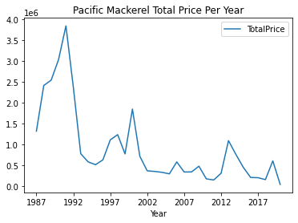
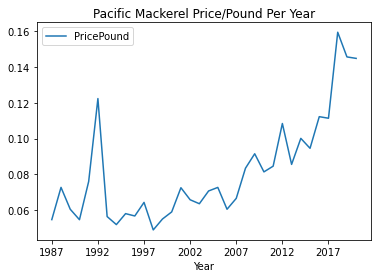
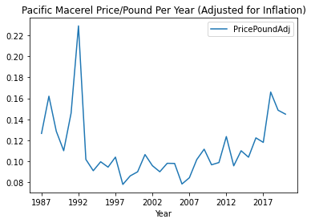
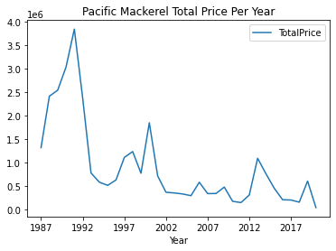
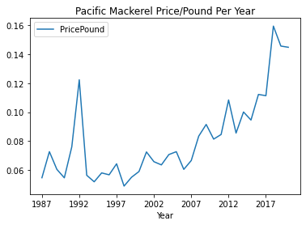
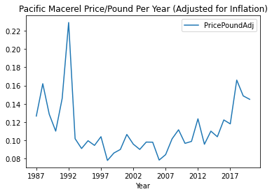

import numpy as np
import pandas as pd
import matplotlib
import matplotlib.pyplot as plt
fish = pd.read_csv("fish.csv")
landing = pd.read_csv("landing.csv")
---------------------------------------------------------------------------
ModuleNotFoundError Traceback (most recent call last)
<ipython-input-1-c922c743758c> in <module>
1 import numpy as np
----> 2 import pandas as pd
3
4 import matplotlib
5 import matplotlib.pyplot as plt
ModuleNotFoundError: No module named 'pandas'
fish.head()
| Unnamed: 0 | unique.code | S_C | S_SC | S_L | S_S | longitude | latitude | year | season | ... | Cyclopteridae1 | Paralabrax1 | Sciaenidae1 | Labridae1 | Chiasmodon1 | Clinidae1 | Hypsoblennius1 | Gobiidae1 | Citharichthys1 | Pleuronichthys1 | |
|---|---|---|---|---|---|---|---|---|---|---|---|---|---|---|---|---|---|---|---|---|---|
| 0 | 11491 | 76.7 49 1904 RL | 1904 | RL | 76.7 | 49.0 | -120.776667 | 35.086667 | 2019 | spring | ... | 0.0 | 0.0 | 0.0 | 0.0 | 0.0 | 0.0 | 0.0 | 0.0 | 0.0 | 0.0 |
| 1 | 11492 | 76.7 51 1904 RL | 1904 | RL | 76.7 | 51.0 | -120.915000 | 35.021667 | 2019 | spring | ... | 0.0 | 0.0 | 0.0 | 0.0 | 0.0 | 0.0 | 0.0 | 0.0 | 0.0 | 0.0 |
| 2 | 11493 | 76.7 55 1904 RL | 1904 | RL | 76.7 | 55.0 | -121.196667 | 34.890000 | 2019 | spring | ... | 0.0 | 0.0 | 0.0 | 0.0 | 0.0 | 0.0 | 0.0 | 0.0 | 0.0 | 0.0 |
| 3 | 11494 | 76.7 60 1904 RL | 1904 | RL | 76.7 | 60.0 | -121.551667 | 34.720000 | 2019 | spring | ... | 0.0 | 0.0 | 0.0 | 0.0 | 0.0 | 0.0 | 0.0 | 0.0 | 0.0 | 0.0 |
| 4 | 11495 | 76.7 70 1904 RL | 1904 | RL | 76.7 | 70.0 | -122.245000 | 34.390000 | 2019 | spring | ... | 0.0 | 0.0 | 0.0 | 0.0 | 0.0 | 0.0 | 0.0 | 0.0 | 0.0 | 0.0 |
5 rows × 109 columns
landing.head()
| Year | Month | BlockCode | SpeciesName | SpeciesCode | TotalPrice | CatchLbs | |
|---|---|---|---|---|---|---|---|
| 0 | 1969 | 1.0 | 600.0 | Mackerel, jack | 55.0 | ||
| 1 | 1969 | 1.0 | 654.0 | Mackerel, jack | 55.0 | ||
| 2 | 1969 | 1.0 | 665.0 | Mackerel, jack | 55.0 | ||
| 3 | 1969 | 1.0 | 681.0 | Mackerel, jack | 55.0 | ||
| 4 | 1969 | 1.0 | 683.0 | Anchovy, northern | 110.0 |
landing.shape
(40047, 7)
landing['TotalPrice'].replace(' ', np.nan, inplace=True)
landing['CatchLbs'].replace(' ', np.nan, inplace=True)
landing
| Year | Month | BlockCode | SpeciesName | SpeciesCode | TotalPrice | CatchLbs | |
|---|---|---|---|---|---|---|---|
| 0 | 1969 | 1.0 | 600.0 | Mackerel, jack | 55.0 | NaN | NaN |
| 1 | 1969 | 1.0 | 654.0 | Mackerel, jack | 55.0 | NaN | NaN |
| 2 | 1969 | 1.0 | 665.0 | Mackerel, jack | 55.0 | NaN | NaN |
| 3 | 1969 | 1.0 | 681.0 | Mackerel, jack | 55.0 | NaN | NaN |
| 4 | 1969 | 1.0 | 683.0 | Anchovy, northern | 110.0 | NaN | NaN |
| ... | ... | ... | ... | ... | ... | ... | ... |
| 40042 | NaN | NaN | NaN | NaN | NaN | NaN | NaN |
| 40043 | Rule of Three | NaN | NaN | NaN | NaN | NaN | NaN |
| 40044 | Rows Affected: 36783 | NaN | NaN | NaN | NaN | NaN | NaN |
| 40045 | Total Pounds Affected: 75.79% | NaN | NaN | NaN | NaN | NaN | NaN |
| 40046 | Total Price Affected: 69.45% | NaN | NaN | NaN | NaN | NaN | NaN |
40047 rows × 7 columns
landing.dropna(subset=['TotalPrice'], inplace=True)
landing.dropna(subset=['CatchLbs'], inplace=True)
landing.head()
| Year | Month | BlockCode | SpeciesName | SpeciesCode | TotalPrice | CatchLbs | |
|---|---|---|---|---|---|---|---|
| 14269 | 1987 | 1.0 | 600.0 | Opah | 467.0 | 135.45 | 942 |
| 14273 | 1987 | 1.0 | 700.0 | Mackerel, Pacific | 51.0 | 115507.803 | 1527577 |
| 14274 | 1987 | 1.0 | 700.0 | Opah | 467.0 | 251.6 | 864 |
| 14279 | 1987 | 1.0 | 719.0 | Mackerel, Pacific | 51.0 | 192.29 | 1171 |
| 14295 | 1987 | 1.0 | 1032.0 | Mackerel, Pacific | 51.0 | 396.675 | 1148.75 |
landing.shape
(3259, 7)
landing['TotalPrice'] = landing['TotalPrice'].astype(float)
landing['CatchLbs'] = landing['CatchLbs'].astype(float)
landing.describe()
| Month | BlockCode | SpeciesCode | TotalPrice | CatchLbs | |
|---|---|---|---|---|---|
| count | 3259.000000 | 3259.000000 | 3259.000000 | 3.259000e+03 | 3.259000e+03 |
| mean | 6.673826 | 809.444001 | 111.689475 | 2.781027e+04 | 4.970166e+05 |
| std | 3.325602 | 138.934181 | 126.770598 | 6.519300e+04 | 9.827517e+05 |
| min | 1.000000 | 441.000000 | 40.000000 | 0.000000e+00 | 5.600000e+00 |
| 25% | 4.000000 | 720.000000 | 51.000000 | 8.898050e+02 | 1.962300e+03 |
| 50% | 7.000000 | 762.000000 | 51.000000 | 5.193300e+03 | 7.697600e+04 |
| 75% | 9.000000 | 863.000000 | 100.000000 | 2.808071e+04 | 5.321430e+05 |
| max | 12.000000 | 1042.000000 | 467.000000 | 1.318225e+06 | 9.448035e+06 |
landing.head()
| Year | Month | BlockCode | SpeciesName | SpeciesCode | TotalPrice | CatchLbs | |
|---|---|---|---|---|---|---|---|
| 14269 | 1987 | 1.0 | 600.0 | Opah | 467.0 | 135.450 | 942.00 |
| 14273 | 1987 | 1.0 | 700.0 | Mackerel, Pacific | 51.0 | 115507.803 | 1527577.00 |
| 14274 | 1987 | 1.0 | 700.0 | Opah | 467.0 | 251.600 | 864.00 |
| 14279 | 1987 | 1.0 | 719.0 | Mackerel, Pacific | 51.0 | 192.290 | 1171.00 |
| 14295 | 1987 | 1.0 | 1032.0 | Mackerel, Pacific | 51.0 | 396.675 | 1148.75 |
landing.SpeciesName.unique()
array(['Opah', 'Mackerel, Pacific', 'Yellowtail',
'Anchovy, northern ', 'Mackerel, jack',
'Sardine, Pacific '], dtype=object)
landing['SpeciesName'].value_counts()
Mackerel, Pacific 1254
Sardine, Pacific 921
Yellowtail 407
Opah 356
Mackerel, jack 180
Anchovy, northern 141
Name: SpeciesName, dtype: int64
landing_grouped = landing.groupby(['Year', 'SpeciesName']).sum()
landing_grouped = landing_grouped.reset_index()
landing_grouped = landing_grouped.drop(columns=['BlockCode', 'SpeciesCode', 'Month'])
landing_grouped.head()
| Year | SpeciesName | TotalPrice | CatchLbs | |
|---|---|---|---|---|
| 0 | 1987 | Anchovy, northern | 26716.750 | 720531.00 |
| 1 | 1987 | Mackerel, Pacific | 1314432.161 | 24095100.05 |
| 2 | 1987 | Mackerel, jack | 9170.750 | 113402.00 |
| 3 | 1987 | Opah | 14030.170 | 38861.30 |
| 4 | 1987 | Sardine, Pacific | 2862.600 | 58613.00 |
landing_grouped.shape
(192, 4)
landing_grouped['SpeciesName'].replace('Anchovy, northern ', 'Anchovy, northern', inplace=True)
landing_grouped['SpeciesName'].replace('Sardine, Pacific ', 'Sardine, Pacific', inplace=True)
landing_price = landing_grouped[['Year','SpeciesName','TotalPrice']]
landing_lbs = landing_grouped[['Year','SpeciesName','CatchLbs']]
landing_grouped.SpeciesName.unique()
array(['Anchovy, northern', 'Mackerel, Pacific', 'Mackerel, jack', 'Opah',
'Sardine, Pacific', 'Yellowtail'], dtype=object)
inflation = [2.32, 2.23, 2.13, 2.02, 1.92, 1.87, 1.81, 1.76, 1.72, 1.67, 1.62, 1.6, 1.57, 1.53, 1.47, 1.46, 1.42, 1.39, 1.35, 1.3, 1.27, 1.22, 1.22, 1.19, 1.17, 1.14, 1.12, 1.1, 1.1, 1.09, 1.06, 1.04, 1.02, 1]
landing_anchovy = landing_grouped[landing_grouped.values == 'Anchovy, northern']
landing_mackerelp = landing_grouped[landing_grouped.values == 'Mackerel, Pacific']
landing_mackerelj = landing_grouped[landing_grouped.values == 'Mackerel, jack']
landing_opah = landing_grouped[landing_grouped.values == 'Opah']
landing_sardine = landing_grouped[landing_grouped.values == 'Sardine, Pacific']
landing_yellowtail = landing_grouped[landing_grouped.values == 'Yellowtail']
landing_anchovy['PricePound'] = landing_anchovy['TotalPrice']/landing_anchovy['CatchLbs']
inflation_anchovy = [2.32, 2.23, 2.13, 2.02, 1.92, 1.81, 1.76, 1.67, 1.62, 1.6, 1.57, 1.53, 1.47, 1.46, 1.42, 1.39, 1.35, 1.3, 1.27, 1.22, 1.22, 1.19, 1.17, 1.12, 1.1, 1.09, 1.04, 1.02, 1]
landing_anchovy['PricePoundAdj'] = landing_anchovy['TotalPrice']*inflation_anchovy/landing_anchovy['CatchLbs']
<ipython-input-192-fe0ea8be5097>:1: SettingWithCopyWarning:
A value is trying to be set on a copy of a slice from a DataFrame.
Try using .loc[row_indexer,col_indexer] = value instead
See the caveats in the documentation: https://pandas.pydata.org/pandas-docs/stable/user_guide/indexing.html#returning-a-view-versus-a-copy
landing_anchovy['PricePound'] = landing_anchovy['TotalPrice']/landing_anchovy['CatchLbs']
<ipython-input-192-fe0ea8be5097>:3: SettingWithCopyWarning:
A value is trying to be set on a copy of a slice from a DataFrame.
Try using .loc[row_indexer,col_indexer] = value instead
See the caveats in the documentation: https://pandas.pydata.org/pandas-docs/stable/user_guide/indexing.html#returning-a-view-versus-a-copy
landing_anchovy['PricePoundAdj'] = landing_anchovy['TotalPrice']*inflation_anchovy/landing_anchovy['CatchLbs']
landing_anchovy.plot(x='Year', y = 'CatchLbs', title = 'Northern Anchovy Catch Lbs Per Year')
landing_anchovy.plot(x='Year', y = 'TotalPrice', title = 'Northern Anchovy Total Price Per Year')
landing_anchovy.plot(x='Year', y = 'PricePound', title = 'Northern Anchovy Price/Pound Per Year')
landing_anchovy.plot(x='Year', y = 'PricePoundAdj', title = 'Northern Anchovy Price/Pound Per Year (Adjusted for Inflation)')
<matplotlib.axes._subplots.AxesSubplot at 0x19a61753400>
landing_mackerelp['PricePound'] = landing_mackerelp['TotalPrice']/landing_mackerelp['CatchLbs']
landing_mackerelp['PricePoundAdj'] = landing_mackerelp['TotalPrice']*inflation/landing_mackerelp['CatchLbs']
<ipython-input-194-7d3439f18274>:1: SettingWithCopyWarning:
A value is trying to be set on a copy of a slice from a DataFrame.
Try using .loc[row_indexer,col_indexer] = value instead
See the caveats in the documentation: https://pandas.pydata.org/pandas-docs/stable/user_guide/indexing.html#returning-a-view-versus-a-copy
landing_mackerelp['PricePound'] = landing_mackerelp['TotalPrice']/landing_mackerelp['CatchLbs']
<ipython-input-194-7d3439f18274>:2: SettingWithCopyWarning:
A value is trying to be set on a copy of a slice from a DataFrame.
Try using .loc[row_indexer,col_indexer] = value instead
See the caveats in the documentation: https://pandas.pydata.org/pandas-docs/stable/user_guide/indexing.html#returning-a-view-versus-a-copy
landing_mackerelp['PricePoundAdj'] = landing_mackerelp['TotalPrice']*inflation/landing_mackerelp['CatchLbs']
landing_mackerelp.plot(x='Year', y = 'CatchLbs', title = 'Pacific Mackerel Catch Lbs Per Year')
landing_mackerelp.plot(x='Year', y = 'TotalPrice', title = 'Pacific Mackerel Total Price Per Year')
landing_mackerelp.plot(x='Year', y = 'PricePound', title = 'Pacific Mackerel Price/Pound Per Year')
landing_mackerelp.plot(x='Year', y = 'PricePoundAdj', title = 'Pacific Macerel Price/Pound Per Year (Adjusted for Inflation)')
<matplotlib.axes._subplots.AxesSubplot at 0x19a632399d0>
 





landing_mackerelj['PricePound'] = landing_mackerelj['TotalPrice']/landing_mackerelj['CatchLbs']
inflation_j = [2.32, 2.23, 2.13, 2.02, 1.92, 1.87, 1.81, 1.76, 1.72, 1.67, 1.62, 1.6, 1.57, 1.53, 1.47, 1.46, 1.39, 1.35, 1.3, 1.27, 1.22, 1.22, 1.19, 1.17, 1.14, 1.12, 1.1, 1.1, 1.09, 1.06, 1.04, 1]
landing_mackerelj['PricePoundAdj'] = landing_mackerelj['TotalPrice']*inflation_j/landing_mackerelj['CatchLbs']
<ipython-input-196-dfb39e6f3f41>:1: SettingWithCopyWarning:
A value is trying to be set on a copy of a slice from a DataFrame.
Try using .loc[row_indexer,col_indexer] = value instead
See the caveats in the documentation: https://pandas.pydata.org/pandas-docs/stable/user_guide/indexing.html#returning-a-view-versus-a-copy
landing_mackerelj['PricePound'] = landing_mackerelj['TotalPrice']/landing_mackerelj['CatchLbs']
<ipython-input-196-dfb39e6f3f41>:3: SettingWithCopyWarning:
A value is trying to be set on a copy of a slice from a DataFrame.
Try using .loc[row_indexer,col_indexer] = value instead
See the caveats in the documentation: https://pandas.pydata.org/pandas-docs/stable/user_guide/indexing.html#returning-a-view-versus-a-copy
landing_mackerelj['PricePoundAdj'] = landing_mackerelj['TotalPrice']*inflation_j/landing_mackerelj['CatchLbs']
landing_mackerelj.plot(x='Year', y = 'CatchLbs', title = 'Jack Mackerel Catch Lbs Per Year')
landing_mackerelj.plot(x='Year', y = 'TotalPrice', title = 'Jack Mackerel Total Price Per Year')
landing_mackerelj.plot(x='Year', y = 'PricePound', title = 'Jack Mackerel Price/Pound Per Year')
landing_mackerelj.plot(x='Year', y = 'PricePoundAdj', title = 'Jack Macerel Price/Pound Per Year (Adjusted for Inflation)')
<matplotlib.axes._subplots.AxesSubplot at 0x19a65273af0>
inflation_opah = [2.32, 2.23, 2.13, 2.02, 1.92, 1.87, 1.81, 1.76, 1.72, 1.67, 1.62, 1.6, 1.57, 1.53, 1.47, 1.46, 1.42, 1.39, 1.35, 1.3, 1.27, 1.22, 1.22, 1.19, 1.17, 1.14, 1.12, 1.1, 1.09, 1.06]
landing_opah['PricePound'] = landing_opah['TotalPrice']/landing_opah['CatchLbs']
landing_opah['PricePoundAdj'] = landing_opah['TotalPrice']*inflation_opah/landing_opah['CatchLbs']
<ipython-input-205-e7ce7fa71dfb>:2: SettingWithCopyWarning:
A value is trying to be set on a copy of a slice from a DataFrame.
Try using .loc[row_indexer,col_indexer] = value instead
See the caveats in the documentation: https://pandas.pydata.org/pandas-docs/stable/user_guide/indexing.html#returning-a-view-versus-a-copy
landing_opah['PricePound'] = landing_opah['TotalPrice']/landing_opah['CatchLbs']
<ipython-input-205-e7ce7fa71dfb>:3: SettingWithCopyWarning:
A value is trying to be set on a copy of a slice from a DataFrame.
Try using .loc[row_indexer,col_indexer] = value instead
See the caveats in the documentation: https://pandas.pydata.org/pandas-docs/stable/user_guide/indexing.html#returning-a-view-versus-a-copy
landing_opah['PricePoundAdj'] = landing_opah['TotalPrice']*inflation_opah/landing_opah['CatchLbs']
landing_opah.plot(x='Year', y = 'CatchLbs', title = 'Opah Catch Lbs Per Year')
landing_opah.plot(x='Year', y = 'TotalPrice', title = 'Opah Total Price Per Year')
landing_opah.plot(x='Year', y = 'PricePound', title = 'Opah Price/Pound Per Year')
landing_opah.plot(x='Year', y = 'PricePoundAdj', title = 'Opah Price/Pound Per Year (Adjusted for Inflation)')
<matplotlib.axes._subplots.AxesSubplot at 0x19a65db4220>
landing_sardine['PricePound'] = landing_sardine['TotalPrice']/landing_sardine['CatchLbs']
landing_sardine['PricePoundAdj'] = landing_sardine['TotalPrice']*inflation/landing_sardine['CatchLbs']
<ipython-input-208-fc33d455d2c0>:1: SettingWithCopyWarning:
A value is trying to be set on a copy of a slice from a DataFrame.
Try using .loc[row_indexer,col_indexer] = value instead
See the caveats in the documentation: https://pandas.pydata.org/pandas-docs/stable/user_guide/indexing.html#returning-a-view-versus-a-copy
landing_sardine['PricePound'] = landing_sardine['TotalPrice']/landing_sardine['CatchLbs']
<ipython-input-208-fc33d455d2c0>:2: SettingWithCopyWarning:
A value is trying to be set on a copy of a slice from a DataFrame.
Try using .loc[row_indexer,col_indexer] = value instead
See the caveats in the documentation: https://pandas.pydata.org/pandas-docs/stable/user_guide/indexing.html#returning-a-view-versus-a-copy
landing_sardine['PricePoundAdj'] = landing_sardine['TotalPrice']*inflation/landing_sardine['CatchLbs']
landing_sardine.plot(x='Year', y = 'CatchLbs', title = 'Pacific Sardine Catch Lbs Per Year')
landing_sardine.plot(x='Year', y = 'TotalPrice', title = 'Pacific Sardine Total Price Per Year')
landing_sardine.plot(x='Year', y = 'PricePound', title = 'Sardine Price/Pound Per Year')
landing_sardine.plot(x='Year', y = 'PricePoundAdj', title = 'Sardine Price/Pound Per Year (Adjusted for Inflation)')
<matplotlib.axes._subplots.AxesSubplot at 0x19a650fdf70>
inflation_yellowtail = [2.32, 2.23, 2.13, 2.02, 1.92, 1.87, 1.81, 1.72, 1.67, 1.62, 1.6, 1.57, 1.53, 1.47, 1.46, 1.42, 1.39, 1.35, 1.3, 1.27, 1.22, 1.22, 1.19, 1.17, 1.14, 1.12, 1.1, 1.1, 1.09, 1.06, 1.04, 1.02, 1]
landing_yellowtail['PricePound'] = landing_yellowtail['TotalPrice']/landing_yellowtail['CatchLbs']
landing_yellowtail['PricePoundAdj'] = landing_yellowtail['TotalPrice']*inflation_yellowtail/landing_yellowtail['CatchLbs']
<ipython-input-213-ffb33c03d430>:2: SettingWithCopyWarning:
A value is trying to be set on a copy of a slice from a DataFrame.
Try using .loc[row_indexer,col_indexer] = value instead
See the caveats in the documentation: https://pandas.pydata.org/pandas-docs/stable/user_guide/indexing.html#returning-a-view-versus-a-copy
landing_yellowtail['PricePound'] = landing_yellowtail['TotalPrice']/landing_yellowtail['CatchLbs']
<ipython-input-213-ffb33c03d430>:3: SettingWithCopyWarning:
A value is trying to be set on a copy of a slice from a DataFrame.
Try using .loc[row_indexer,col_indexer] = value instead
See the caveats in the documentation: https://pandas.pydata.org/pandas-docs/stable/user_guide/indexing.html#returning-a-view-versus-a-copy
landing_yellowtail['PricePoundAdj'] = landing_yellowtail['TotalPrice']*inflation_yellowtail/landing_yellowtail['CatchLbs']
landing_yellowtail.plot(x='Year', y = 'CatchLbs', title = 'Yellowtail Catch Lbs Per Year')
landing_yellowtail.plot(x='Year', y = 'TotalPrice', title = 'Yellowtail Total Price Per Year')
landing_yellowtail.plot(x='Year', y = 'PricePound', title = 'Yellowtail Price/Pound Per Year')
landing_yellowtail.plot(x='Year', y = 'PricePoundAdj', title = 'Yellowtail Price/Pound Per Year (Adjusted for Inflation)')
<matplotlib.axes._subplots.AxesSubplot at 0x19a652dc6a0>